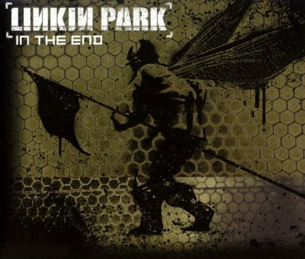
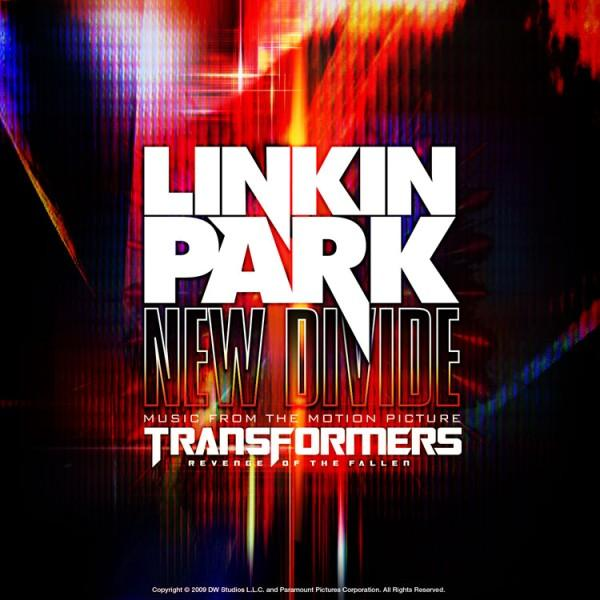

University Vietnamese-German
Foundation Year
English for Computer Science

LINKIN PARK
In the end
Numb
New divide
Linkin Park is an American rock band from Agoura Hills, California. Formed in 1996, the band rose to international fame with their debut album Hybrid Theory(2000), which was certified diamond by the RIAA in 2005 and multi-platinum in several other countries. Their following studio album Meteora continued the band's success, topping the Billboard 200 album chart in 2003, and was followed by extensive touring and charity work around the world. In 2003, MTV2 named Linkin Park the sixth-greatest band of the music video era and the third-best of the new millennium. Billboard ranked Linkin Park No. 19 on the Best Artists of the Decade chart. In 2012, the band was voted as the greatest artist of the 2000s in a Bracket Madness poll on VH1.In 2014, the band was declared as the Biggest Rock Band in the World Right Now by Kerrang!.
Having adapted nu metal and rap metal to a radio-friendly yet densely layered style in Hybrid Theory and Meteora,the band explored other genres in their next studio album, Minutes to Midnight (2007).The album topped the Billboard charts and had the third-best debut week of any album that year.The band continued to explore a wider variation of musical types in their fourth album, A Thousand Suns (2010), layering their music with more electronicsounds and beats. Their fifth album, Living Things (2012), combines musical elements from all of their previous records. Their sixth and most recent album, The Hunting Party (2014), returned to a heavier rock sound. The band has collaborated with several other artists, most notably with rapper Jay Z in their mashup EP Collision Course, and many others on the remix albums Reanimationand Recharged.Linkin Park has sold over 68 million albums worldwide and has won two Grammy Awards.
Reference

In the end
It starts with one thing I don't know why
It doesn't even matter how hard you try
Keep that in mind I designed this rhyme
To explain in due time
All I know time is a valuable thing
Watch it fly by as the pendulum swings
Watch it count down to the end of the day
The clock ticks life away
It's so unreal, didn't look out below
Watch the time go right out the window
Trying to hold on but didn't even know
Wasted it all just to watch you go
I kept everything inside
And even though I tried, it all fell apart
What it meant to me
Will eventually be a memory of a time when
I tried so hard and got so far
But in the end it doesn't even matter
I had to fall to lose it all
But in the end it doesn't even matter
One thing, I don't know why
It doesn't even matter how hard you try
Keep that in mind I designed this rhyme
To remind myself how I tried so hard
In spite of the way you were mocking me
Acting like I was part of your property
Remembering all the times you fought with me
I'm surprised it got so far
Things aren't the way they were before
You wouldn't even recognize me anymore
Not that you knew me back then
But it all comes back to me in the end
You kept everything inside
And even though I tried, it all fell apart
What it meant to me
Will eventually be a memory of a time when
I tried so hard and got so far
But in the end it doesn't even matter
I had to fall to lose it all
But in the end it doesn't even matter
I've put my trust in you
Pushed as far as I can go
For all this
There's only one thing you should know
I've put my trust in you
Pushed as far as I can go
For all this
There's only one thing you should know
I tried so hard and got so far
But in the end it doesn't even matter
I had to fall to lose it all
But in the end it doesn't even matter
Back to top
Back to home page

Numb
I'm tired of being what you want me to be
Feeling so faithless, lost under the surface
I don't know what you're expecting of me
Put under the pressure, of walking in your shoes
(Caught in the undertow, just caught in the undertow)
Every step that I take is another mistake to you
(Caught in the undertow, just caught in the undertow)
I've become so numb
I can't feel you there
Become so tired, so much more aware
I'm becoming this, all I want to do
Is be more like me and be less like you
Can't you see that you're smothering me?
Holding too tightly, afraid to lose control
'Cause everything that you thought I would be
Has fallen apart, right in front of you
(Caught in the undertow, just caught in the undertow)
Every step that I take is another mistake to you
(Caught in the undertow, just caught in the undertow)
An' every second I waste is more than I can take
I've become so numb
I can't feel you there
Become so tired, so much more aware
I'm becoming this, all I want to do
Is be more like me and be less like you
And I know
I may end up failing too
But I know
You were just like me
With someone disappointed in you
I've become so numb
I can't feel you there
Become so tired, so much more aware
I'm becoming this, all I want to do
Is be more like me and be less like you
I've
Become so numb
I can't feel you there
I'm tired of being what you want me to be
I've become so numb
I can't feel you there
I'm tired of being what you want me to be
Back to top
Back to homepage

New divide
I remembered black skies
The lightning all around me
I remembered each flash
As time began to blur
Like a startling sign
That fate had finally found me
And your voice was all I heard
That I get what I deserve
So give me reason
To prove me wrong
To wash this memory clean
Let the floods cross the distance in your eyes
Give me reason
To fill this hole
Connect the space between
Let it be enough to reach the truth that lies
Across this new divide
There was nothing in sight
But memories left abandoned
There was nowhere to hide
The ashes fell like snow
And the ground caved in
Between where we were standing
And your voice was all I heard
That I get what I deserve
So give me reason
To prove me wrong
To wash this memory clean
Let the floods cross the distance in your eyes
Across this new divide
In every loss
In every lie
In every truth that you'd deny
And each regret
And each goodbye
Was a mistake too great to hide
And your voice was all I heard
That I get what I deserve
So give me reason
To prove me wrong
To wash this memory clean
Let the floods cross the distance in your eyes
Give me reason
To fill this hole
Connect the space between
Let it be enough to reach the truth that lies
Across this new divide
Across this new divide
Across this new divide
Back to top
Back to homepage
Reference